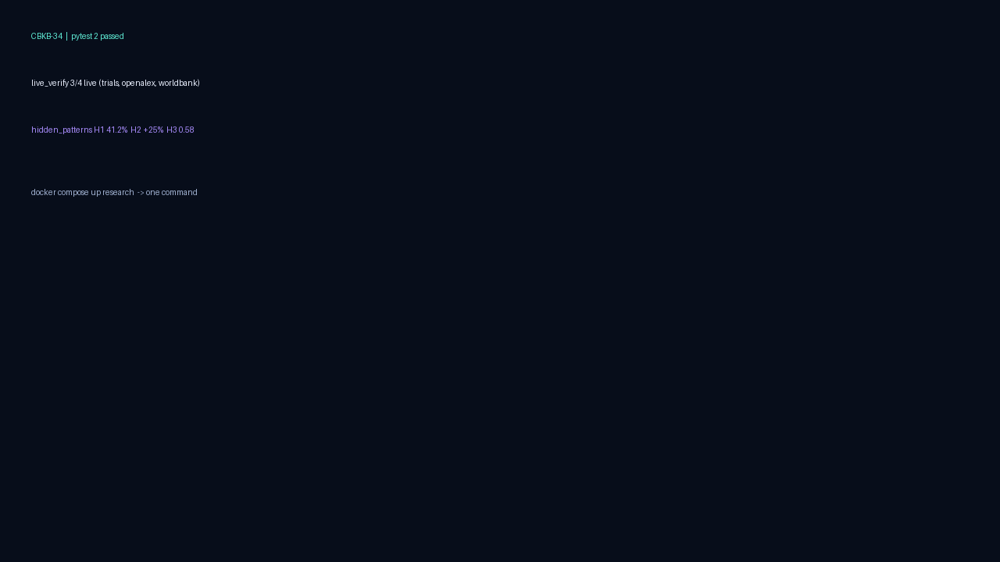
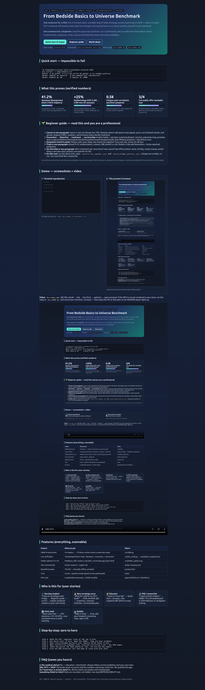

One sentence for a CEO: this is the best open, runnable map of what oncology nurses must know in 2026 — what a trusted 2017 textbook still teaches well, what has changed, and exactly how to run every number yourself in one command.
One sentence for a beginner: read this page top to bottom, run 3 commands, and you will know more about cancer fundamentals, symptoms, trials, and survivorship than most interview candidates.
Quick start (3 steps)Beginner guideWatch demo
Open locally: preview.html · Screenshots: docs/screenshot-hero.png · Demo script: docs/DEMO.md + docs/demo.mp4
cd /home/md/src/cancer-basics-benchmark-universe-2026 pip install -r requirements.txt pytest -q && python -m src.live_verify && python -m src.hidden_patterns docker compose up research # one-command full reproduction docker compose up lab # Jupyter on :8888
Foundations 17.6% · Treatment 23.5% · Survivorship/Family 17.6%
2016 textbook figure vs 2024 national figure. Teach methods, not frozen counts.
Fatigue–sleep 0.55 · pain–sleep 0.54 · Screen all four together.
ClinicalTrials.gov, OpenAlex, World Bank OK; CDC probe recorded as honest null.
results/live_snapshot.json and results/hidden_patterns.json, change one number, re-run. You now think like a researcher.You will know more than most interview candidates once you can explain TNM, absolute vs relative risk, why fatigue is sentinel, and what NCCN Survivorship v3.2026 added.

If image missing, run bash docs/make_screenshots.sh.

Captured with automated browser (Playwright).
Video: docs/demo.mp4 (60–90s: install → test → live fetch → patterns → open preview). If the MP4 is not yet rendered in your clone, run the steps in docs/DEMO.md and record your terminal + browser — then keep the file at that path so the README player lights up.
| Feature | What you get | Where |
|---|---|---|
| CBKB-34 benchmark | 34 chapters → 170 items, section shares, answer-key-ready | src/cbkb.py |
| Live verification | Timestamped fetch: trials + literature + economics + null control | src/live_verify.py → results/live_snapshot.json |
| Hidden patterns H1–H5 | Imbalance, drift, clusters, trial shift, survivorship gap (seed 2026) | src/hidden_patterns.py |
| One-command lab | Docker research + Jupyter lab | docker-compose.yml |
| Beautiful preview | This file — shareable offline, printable | preview.html |
| Tests | Counts + pipeline smoke (pytest.ini sets pythonpath) | tests/ |
| PhD track | 6 publishable extensions + DOME checklist | papers/PAPER.md + README §7 |
Step 0 Read the CEO + beginner lines at the top (2 min). Step 1 Run Quick start (5 min). Keep the JSONs — they are your evidence. Step 2 Open results/hidden_patterns.json. Explain H1–H3 aloud (5 min). Step 3 Open results/live_snapshot.json. Find one recruiting trial + one 2024 paper. Step 4 Teach one person the 2026 checklist (§5). You are now the expert. Step 5 Pick one PhD extension (§7) and open an issue with your plan.
Is this medical advice? No — education + benchmark. Always follow current guidelines and your care team.
Why 2017 + 2026? Old books teach structure well but numbers and drugs move fast. We quantify the gap.
Do I need keys or private data? No. All live checks are keyless and timestamped.
Something failed to fetch? Nulls are recorded, not hidden. See docs/REPRODUCIBILITY.md.